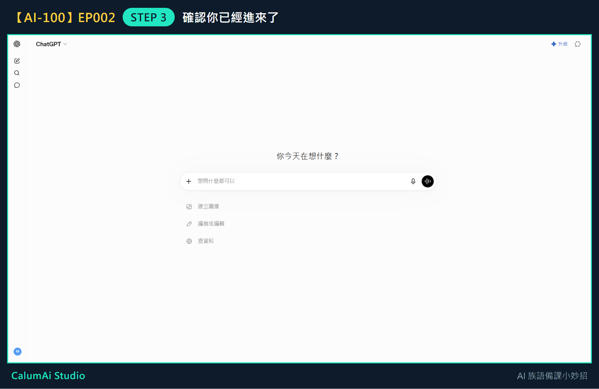
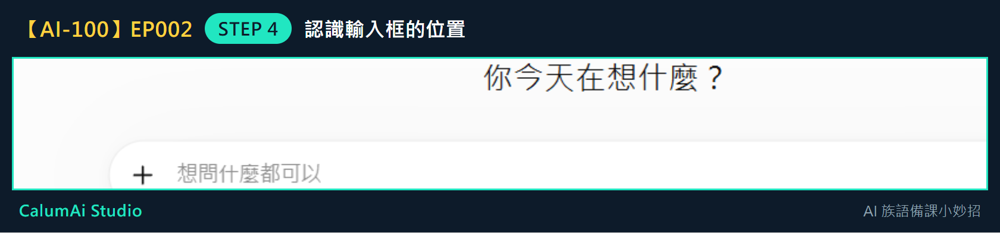
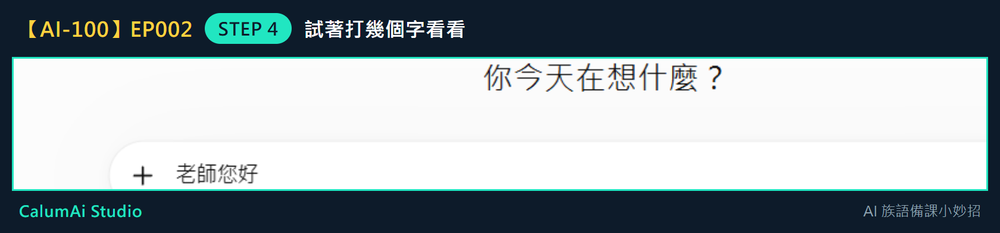

EP002 講義：建立第一個 ChatGPT 帳號
今天只做一件事
成功進入 ChatGPT。不教寫 Prompt、不教進階功能，這些留到之後幾集。
需要準備
- 一台可以上網的電腦或手機、瀏覽器。
- 一個常用的 Email，或 Google／Apple 帳號（登入用，不需要新申請）。
- 不用先想好要問什麼問題，今天只練「進去」這件事。
步驟 1：打開網站
打開瀏覽器，在上面的網址列輸入：
chatgpt.com慢慢打，打完按 Enter，看到畫面出現後再往下一步。
步驟 2：登入或註冊
畫面出現「登入」或「註冊」時：
- 已經有帳號的老師 → 點「登入」
- 還沒有帳號的老師 → 點「註冊」
接著選一個自己熟悉的方式：用 Email、或用 Google／Apple 帳號都可以。
密碼不用告訴任何人，包括這門課。畫面如果請你收信或做驗證，照著指示慢慢完成就好。
步驟 3：確認你已經進來了
登入成功後會看到這個畫面：

看到中間有一個可以打字的長條框，就代表你已經成功進入 ChatGPT 了。
步驟 4：認識畫面上的位置
把畫面中間那個框放大來看：

這個寫著「想問什麼都可以」的框，就是以後要打字的地方。
試著點一下它，隨便打幾個字看看：

打得出字，就表示一切正常。今天可以先把字刪掉，不用送出。
老師的小提醒
- 今天不用真的問問題，看到輸入框、確認自己能進來，就算完成任務。
- 畫面左邊的「新對話」，是以後想重新開始問問題的地方。
- 左下角是你的帳號，今天不用調整任何設定。
- 這一步看起來很小，但它是後面所有集數的起點——先進去，才能開始慢慢學。
今日金句
先進去，再慢慢學。
下一集預告
下一集，我們會一起問 ChatGPT 第一個備課問題。